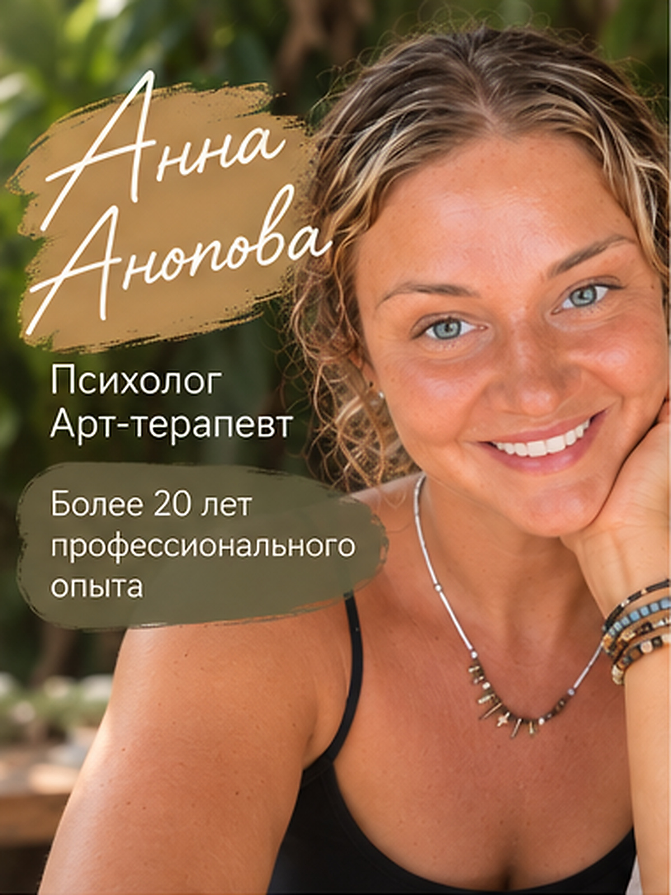

Специалисты
Здесь можно познакомиться с подходом специалиста и выбрать того, с кем вам будет комфортно работать. Каталог будет пополняться.

Здесь можно познакомиться с подходом специалиста и выбрать того, с кем вам будет комфортно работать. Каталог будет пополняться.
